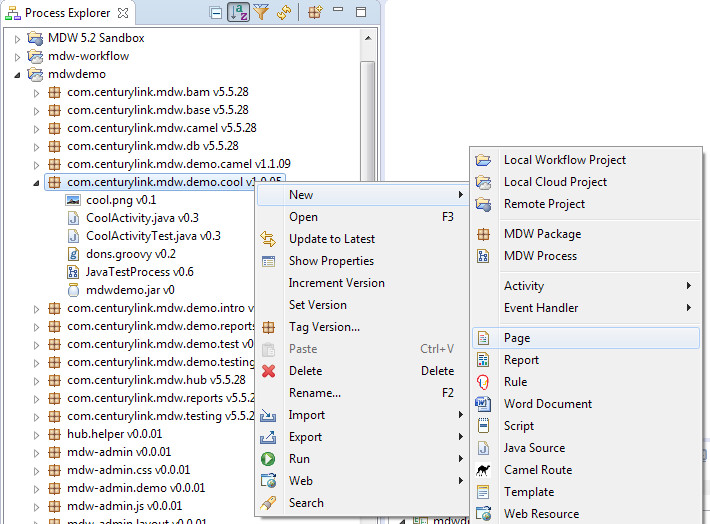
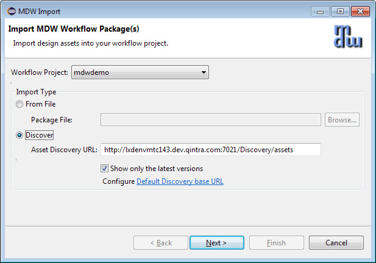
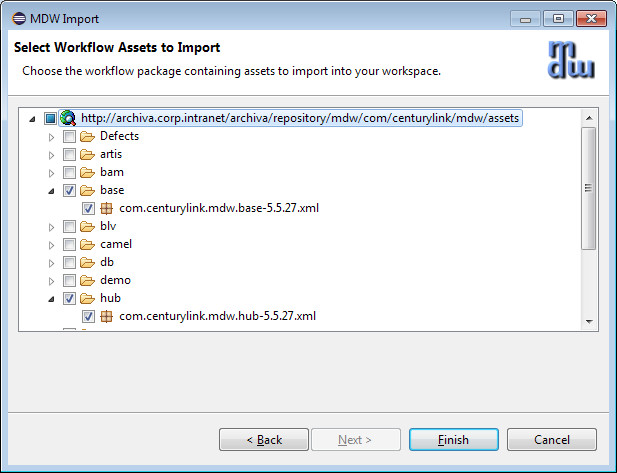
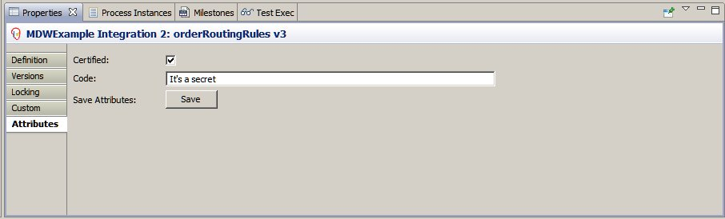

Workflow Assets
Workflow assets consist of documents or artifacts that are packaged along with process definitions. They also include features that support the ability for end-users to own and maintain them,
with the intent being to provide a mechanism for quickly responding to evolving business conditions by allowing changes to be enacted in a controlled manner without requiring an application deployment.
Workflow assets are stored in the MDW database. Migration between environments is accomplished by Export/Import and Asset Discovery.
Types of Assets
The following are examples of the different types of workflow assets available in MDW:
- Processes, Activities
- External Event Handlers
- Dynamic Java
- Spring Artifacts
- Scripts (Groovy, JavaScript, MagicBox)
- Automated Test Cases and Expected Results
- Business Rules (Drools, Excel Decision Tables)
- Pages (HTML5, Facelets)
- Templates (Velocity, HTML, Facelets)
- Reports (BIRT)
- Web Resources (CSS, Script, Images)
- Camel Routes (Services Orchestration)
- Documentation (MS Word, HTML, Text)
Common Features
All of these assets can be managed in the same way, with the following built-in capabilities:
- Authorization Control based on LDAP Credentials
- Versioning with Comments, History, Archiving and Rollback (see Asset Persistence)
- Asset Locking to Prevent Simultaneous Modification
- Rigorous Audit Log Tracking User Changes
- Tools for Migrating between Environments
Managing Workflow Assets
Workflow assets can be managed by developers or end-users via MDW Designer, as long as they belong to the role ProcessAdmin for the target project.
To create a brand new instance of an asset, right-click on a workflow package in Process Explorer, and selecting New, and then the type of asset desired.
Assuming that you appropriate permissions, updates can be accomplished by double-clicking the asset to edit it in place, or by right clicking and selecting Import > New Version.
Either way, the version will be incremented and you'll be prompted for a comment to accompany the new version.

The style of editor and default document contents will differ according to the type of asset created, but managing the assets is the same regardless of type.
The lifecycle management aspects of workflow assets are viewed and controlled using the Tabbed Properties in Designer.
To display the Tabbed Properties, right-click on the asset to be managed and select Show Properties from the menu.
You can also use an external editor if that's more appropriate. To save a workflow asset to the file system right-click on it and select Export > Export to File.
Then after updating the asset in an external editor, import your changes by right-clicking on the asset and selecting Import > New Version (make sure you've got it locked first as described below).
MDW applications need to be able to version their assets and propagate them one environment to another (dev to test, test to prod, etc.).
Starting with MDW 5.5 asset versioning is achieved by integrating with Git (see Asset Persistence).
Importing assets from Git can be done through Designer, or through a command-line interface to support automation and continuous integration.
TODO: screenshots for Designer import from Git, and examples of command-line import scripts
Beyond environmental migrations, MDW Workflow Assets are meant to be shared and reused
across applications. For this purpose Designer provides a discovery mechanism to locate and import assets from a central repository.
The MDW base and hub packages are examples of asset collections that can be reused in this way.
To discover and import these packages, right-click on your project in Process Explorer view and select
Import > Package(s) > Discover.


Attributes
Custom attributes are a way for business users to associate any arbitrary value with workflow assets.
A common example of this is a "Certified" flag or equivalent which indicates that a particular version of the asset should be in effect.
At design-time the developer specifies which custom attributes are needed (see "Custom" tab below), as well as which roles are allowed to set these field values.
Then, during operation, business users with the appropriate role can change the values of these fields.
Typically these values are consulted at runtime to control which version of an asset will be in force for a workflow process activity (see Drools Activities for an example of custom attributes in practice).
